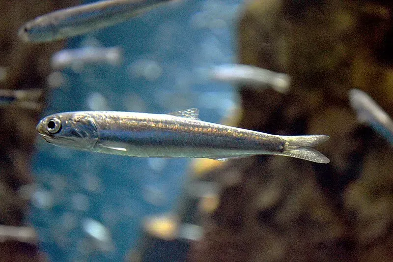
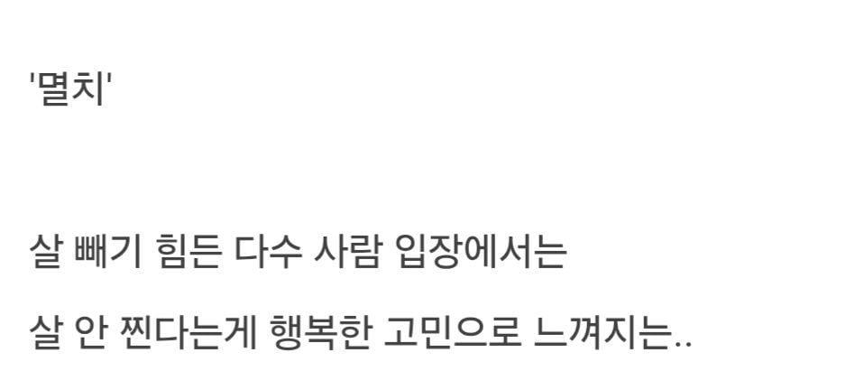

마른 비만...ㄷㄷ
몸은 돼진데 꼬추는 멸치임
원래 소아비만이나 어릴때부터 살찐 애들은 작대
그냥 먹는거 귀찮아서 안먹는애들일껄
우리와이프 뼈말라에 가까운데 그냥 먹는것 자체를 귀찮아 하더라
그게 참 신기하다는거임
저건 타고난 공룡유전자인가요 약물인가요
약 쓸 돈으로 밥 존나 많이 먹을 청년임
원래몸도 운동 안했다지 체격이 좀 있는 느낌인듯?
멸치고민은 근육이 안는다는 얘기지 씹돼지가 되고싶다는게 아님
멸치는 안먹어서 살이 안찌는거지 많이 먹어도 안찌는게 아닌데
그건 케바케인듯 내주변 멸치들 나 포함 존나 먹어
나도 삼시세끼에 단백질보충제 끼고 사는데 그냥 에너지 흡수율이 더럽게 낮은거같음
181인데 운동 안하던 시절엔 64-66 사이였고
꾸준히 운동하는 지금은 75전후임
헬스장 pt도 한 일년 받았는데 앞자리 8이 죽어도 안되서 근육 벌크업으로 체중늘리기는 애지녁에 포기함 그냥 체형유지쪽으로 홈트하고있음
그나마 70중후반 유지하는 것도 운동 덕이고. 중간에 사정있어서 운동 한 1년 안하니까 바로 70으로 곤두박질 치더라.
많이 먹는다는 멸치들은 탄단지 맞춰가며 최소 3천 칼로리 이상 먹는지 봐야한다. 그리고 나눠서 먹는게 아니라 몇끼에 폭식하는지도 봐야하지
아모띠였나 다리 부상으로 몇달동안 운동 못하니까 그냥 일반인 하체로 돌아오던데 운동이란게 그런거보면 현타가 오지만 어쩔 수 없는거 같음. 꾸준히 운동해야지
나도 6에서 7 찍었고 8을 노리고 있는데 진짜 너무 힘들어서 포기도 여러번 했고 최근에 다시 도전했는데 개붕이도 화이팅이다
아 그리고 내 생각엔 그 멸치는 술먹고 폭식을 안하는 멸치다 살찔 이유가 많지 않은거지
살찐 사람들 대부분 술 좋아함 내가 그럼 ^_^ 살찌는덴 다 이유가 있고, 반대로 살 안찌는덴 다 이유가 있다고
안주 다처먹고 집 가면서 순대국 먹고 자고 일어나서 해장하는데, 안찌는놈 못봄 나약한 멸치들은 난 더 못먹어라는
말을 대부분 외침 다만 축복받은 유전자들은 다르긴한데, 여태것 못보긴 함
적당히 통통한게 건강에 좋음
멸치들은 대부분 먹는거에서 별로 낙을 못느끼고 큰 관심 자체가 없는거 같던데
나이 들면 자연스럽게 고쳐지긴 하지만 의학적으로 비만보다 저체중이 더 안좋다고 하던데. 그리고 위장병이나 빈혈같은 지병 달고 사는 경우가 많았음.
나는 어릴때 진짜 개말랐는데 지금은 정상보다 조금 더 체중이 나가거든..?
20대중반까지도 52키로였음.. 지금 73~75쯤 와리가리 하는데 키가 171임
근데 위염은 어릴때부터 달고살았는데 나이먹고 위염도 달고사는 살찐놈이 됨 이제는...
내가 ㅈㄴ 멸치인데 운동해도 근육이 안붙어 ㅅㅂ
나름 몇 년을 노력했는데도 남들 근육 느는 거에 반도 안되는거보고 현타 오지게 옴
대신멸치들보통고추가큼
멸치면 대다수 소화능력 일반인 이하라 보면 됨
마운자로를 가지고 태어난 사람들
살이 안쪄써 고민이라니....
그 고민할 시간에 쳐먹으며 그 행운을 누리겠다..
씨발 얼마나 인생이 행복할까
그 미안한데 멸치들은 애초에 먹으면서 행복하다라는걸 별로 안느김... 그냥 배고프니 먹는다지
멸치 이자식들은 살찌고 싶다면서 안먹더라..
좀 먹어야 찐다고 멸치들아!!!
돼지특) 본인은 일반인이라 생각하고 멸치가 부럽다고 함
멸치 95%가 지는 많이먹는데 안찌는체질인줄암 쥐똥만큼 먹으면서
살이 안찌는 만큼 근육도 안붙어서 근감소증 조심해야됨. 나이들수록 근육량 못지키면 허리,관절도 같이 약해져버려
사람 몸뚱이 뚱뚱하면 뚱뚱하다고 망가져 마르면 마르다고 망가져 뭐든 적당한게 좋은데 참 어렵단말이지
존나 배고프고 존나 졸리면 잠을 택함
선천적 멸치 운동으로 찌움
기본 체중 5-7키로 올리는데 10년 걸림
대부분의 멸치는 나이 먹으면서 ET로 수렴진화함